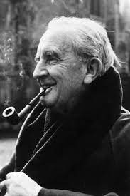

John Ronald Reuel Tolkien (1892–1973) was a major scholar of the English language, specialising in Old and Middle English. Twice Professor of Anglo-Saxon (Old English) at the University of Oxford, he also wrote a number of stories, including most famously The Hobbit (1937) and The Lord of the Rings (1954–1955), which are set in a pre-historic era in an invented version of our world which he called by the Middle English name of Middle-earth. This was peopled by Men (and women), Elves, Dwarves, Trolls, Orcs (or Goblins) and of course Hobbits.

Tolkien's fantasy books on Middle-earth, especially The Lord of the Rings and The Silmarillion, drew on a wide array of influences including his philological interest in language Christianity, mythology, archaeology, ancient and modern literature, and personal experience. His philological work centred on the study of Old English literature, especially Beowulf, and he acknowledged its importance to his writings. He was a gifted linguist, influenced by Germanic, Celtic, Finnish, and Greek language and mythology. Commentators have attempted to identify many literary and topological antecedents for characters, places and events in Tolkien's writings. Some writers were important to him, including the Arts and Crafts polymath William Morris, and he undoubtedly made use of some real place-names, such as Bag End, the name of his aunt's home. He acknowledged, too, John Buchan and H. Rider Haggard, authors of modern adventure stories that he enjoyed. The effects of some specific experiences have been identified. Tolkien's childhood in the English countryside, and its urbanization by the growth of Birmingham, influenced his creation of the Shire, while his personal experience of fighting in the trenches of the First World War affected his depiction of Mordor.